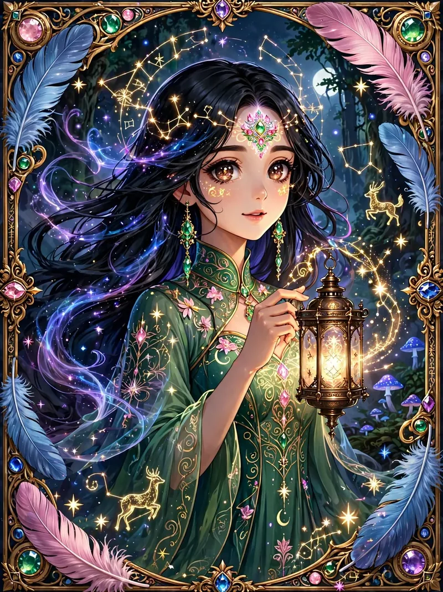
Elara
La narradora de sombrasSu lámpara transforma las sombras en narraciones llenas de sabiduría. Enseña el poder del lenguaje para crear realidades nuevas.
Toca el texto donde quieres empezar. Escape cancela.
Un viaje de transformación donde cada historia ilumina el camino de regreso a ti.
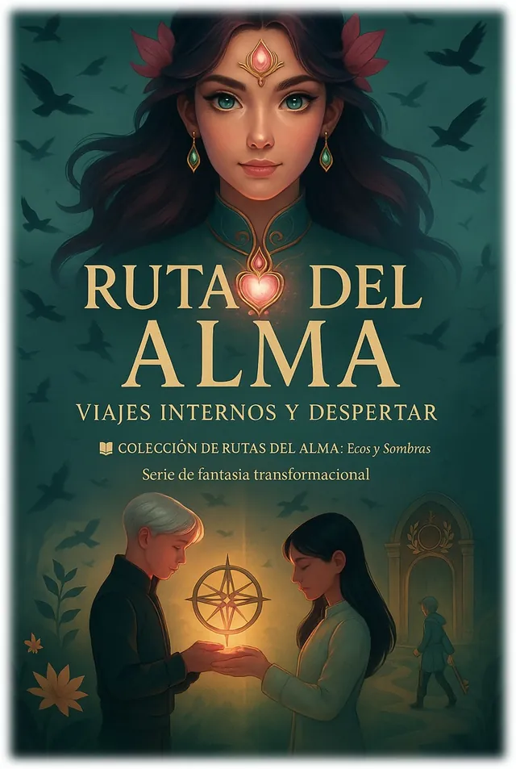
“Rutas del Alma: Viajes Internos y Despertar Colectivo” es una obra ideal para lectores jóvenes (+10 años) interesados en el desarrollo personal y la reflexión ontológica. A través de metáforas poderosas y diálogos introspectivos, el libro fomenta valores como la empatía, la claridad mental y la aceptación de uno mismo y los demás.
Características principales:
En términos generales, este libro es una herramienta valiosa para jóvenes y adultos que buscan material inspirador y reflexivo, alejado de cualquier contenido que pueda ser dañino o inapropiado.

Su lámpara transforma las sombras en narraciones llenas de sabiduría. Enseña el poder del lenguaje para crear realidades nuevas.
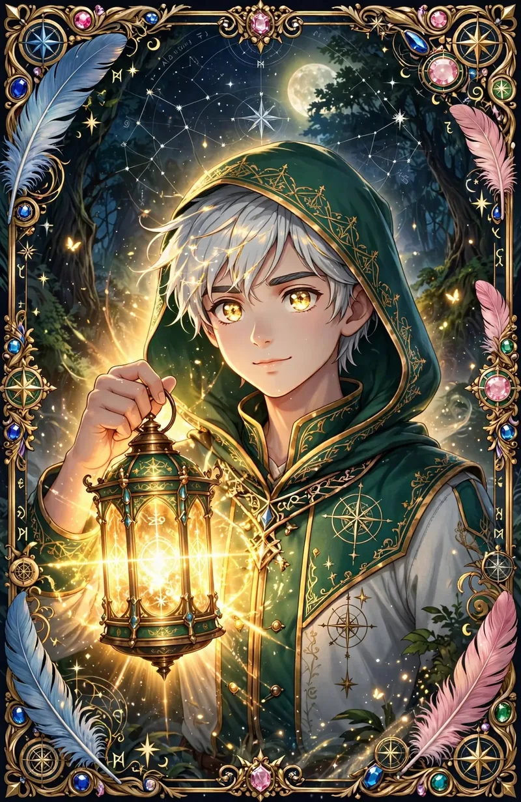
Su luz brillante ilumina el camino en la más densa oscuridad. Simboliza la claridad y el propósito en la vida.
En el corazón de un reino olvidado, se encontraba un pequeño pueblo rodeado de montañas y bosques misteriosos. En este lugar, donde el amanecer se entrelazaba con el misterio de la noche, vivían dos jóvenes guardianes, Liam y Elara. Cada uno había heredado una lámpara mágica que tenía el poder de revelar verdades ocultas y compartir historias capaces de transformar vidas.
La lámpara de Liam emitía una luz brillante que iluminaba el camino en la más densa oscuridad, simbolizando la claridad y el propósito en la vida. La lámpara de Elara tenía la habilidad de transformar las sombras en narraciones llenas de sabiduría, reflejando el poder del lenguaje y la interpretación en la creación de nuevas realidades. Juntos, cuidaban del Gran Libro de Fábulas, un antiguo tomo que contenía relatos de tiempos pasados y futuros posibles, guardado celosamente en un templo en lo alto de una colina.
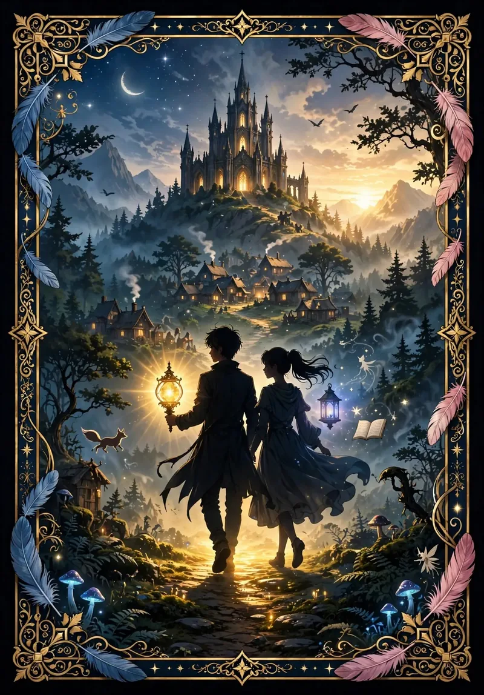
Un día, una misteriosa tormenta se desató sobre el pueblo, trayendo consigo un enjambre de aves negras que oscurecieron el cielo y sembraron el miedo en los corazones de sus habitantes. Las aves se posaron alrededor del templo, protegiendo una antigua clave que abriría el portal hacia un mundo de sueños y pesadillas.
Liam y Elara, guiados por sus lámparas y el poder de las historias, decidieron enfrentarse a este nuevo desafío. Sabían que las fábulas que contenía el libro no eran solo cuentos para entretener, sino lecciones vitales que les ayudaban a observar sus propias creencias limitantes y posibilidades ocultas.
“Nuestro destino está unido a estas historias,” dijo Liam, sosteniendo su lámpara con determinación. “Si podemos comprender y compartir su esencia, tal vez podamos cambiar el curso de los eventos y transformar nuestra comunidad.”
Elara asintió, sus ojos reflejando la luz suave de su lámpara. “Cada relato nos ofrece una nueva perspectiva,” respondió. “Debemos elegir conscientemente cuál compartir para liberar al pueblo de esta oscuridad.”
Mientras leían el libro, las palabras comenzaron a actuar como un catalizador para el cambio. Las historias despertaron la conciencia del pueblo, disipando las sombras y llenando el ambiente de una luz cálida y reconfortante.
Durante su búsqueda, Liam y Elara descubrieron un misterioso compás dorado con plumas azules y rosadas, simbolizando el equilibrio entre la razón y la emoción, la lógica y la creatividad. Este compás, al igual que sus lámparas, tenía el poder de guiar a quien lo usara hacia la verdadera comprensión de sí mismo.
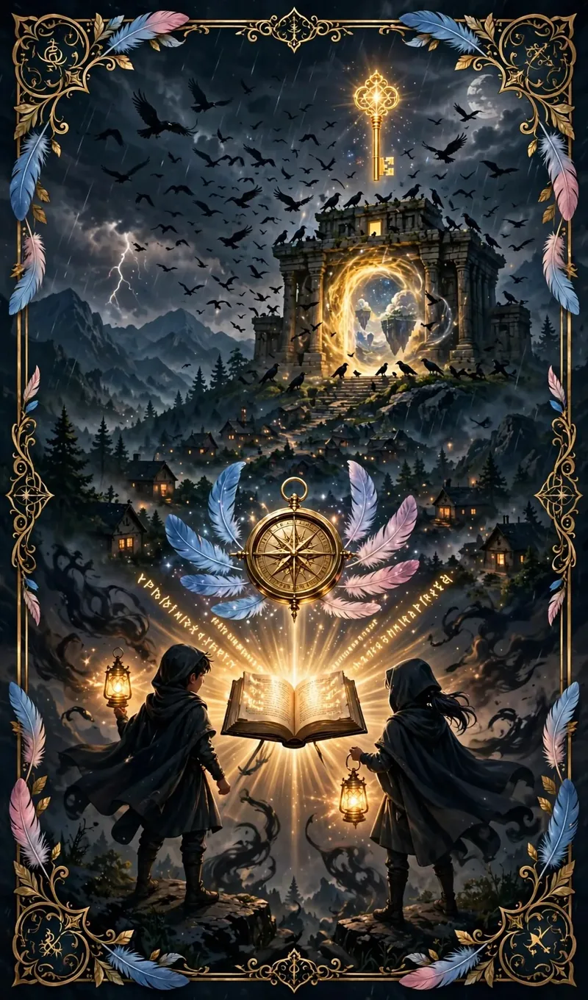
El compás, posicionado sobre el Gran Libro de Fábulas, comenzó a girar lentamente, emitiendo un resplandor que iluminó las páginas. En ese momento, Liam y Elara entendieron que cada historia era una guía para encontrar su verdadero norte, una herramienta para navegar los desafíos de la vida con claridad y propósito.
Al enfrentar los desafíos que el mundo les presentaba, Liam y Elara descubrieron que el verdadero poder no residía solo en las lámparas mágicas o en el libro, sino en la capacidad de reinterpretar las historias de su vida y rediseñar su realidad. Así, emprendieron un viaje para compartir estas fábulas con otros pueblos, creando espacios de reflexión y autodescubrimiento. Sabían que en cada relato se encontraba una invitación para explorar quiénes eran y quiénes podían llegar a ser.
Así, el legado de las lámparas mágicas y el Gran Libro de Fábulas perduraría a través del tiempo, iluminando el camino de aquellos dispuestos a embarcarse en el viaje de transformación personal, encontrando en las palabras y en su propio ser la sabiduría para vivir una vida plena y auténtica.
Cinco principios ilustrados. Cada lámina se muestra completa para acompañar la lectura ontológica.
01 / 05
La lámpara de Liam, que ilumina el camino incluso en la oscuridad, simboliza el valor de tener claridad y propósito en la vida. En el coaching ontológico, esta claridad es esencial para la autoconciencia. Pregúntate: ¿Qué ilumina tu camino? ¿Qué valores y propósitos guían tus decisiones y acciones? Al igual que Liam, busca iluminar tus áreas de duda o confusión para avanzar con determinación y certeza.
Principio de coaching ontológico • Texto íntegro
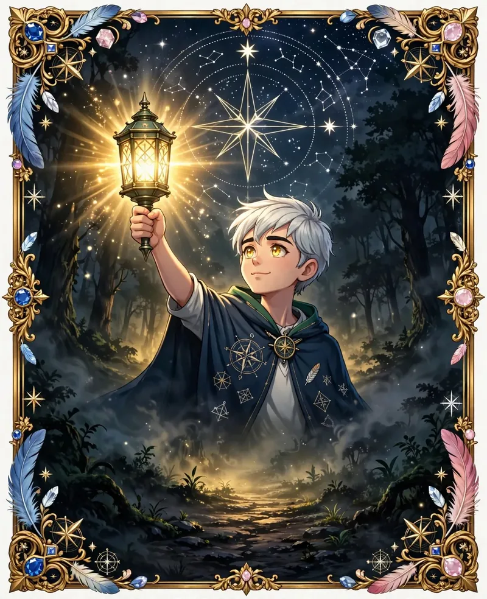
02 / 05
La lámpara de Elara, que transforma sombras en narrativas llenas de sabiduría, refleja el poder transformador del lenguaje. El coaching ontológico pone un énfasis fuerte en cómo nuestro lenguaje y nuestras historias dan forma a nuestra realidad. Reflexiona sobre tu diálogo interno y las narrativas que te cuentas sobre ti mismo. ¿Qué historias te estás contando acerca de ti? ¿Cómo puedes reescribir estas narrativas para abrir nuevas posibilidades y perspectivas?
Principio de coaching ontológico • Texto íntegro
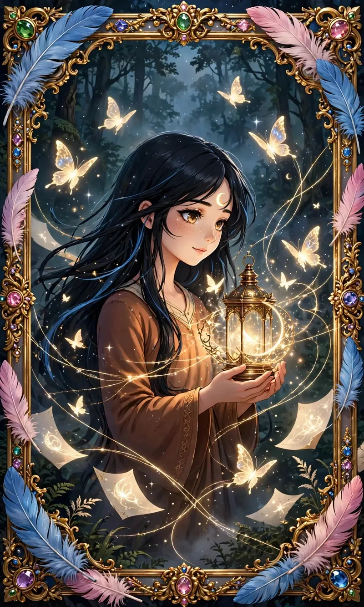
03 / 05
Liam y Elara aprendieron que el verdadero poder radica en la capacidad de reinterpretar sus historias personales. En el coaching ontológico, esta reinterpretación es crucial para la transformación. Considera cómo puedes reinterpretar tus experiencias pasadas para transformar tu presente y futuro. Acepta y revisa tus historias pasadas para descubrir nuevas formas de enfrentar y superar obstáculos.
Principio de coaching ontológico • Texto íntegro
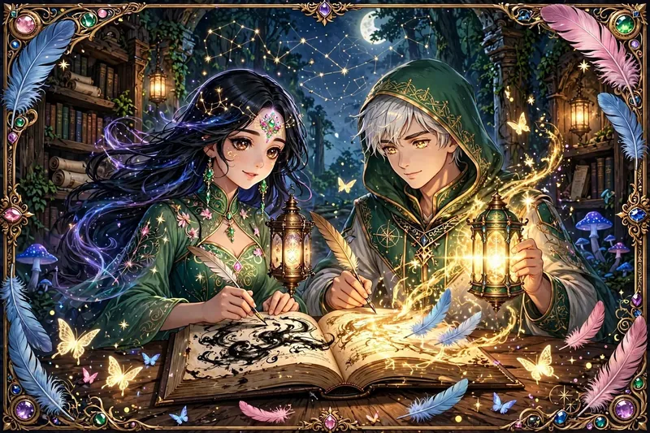
04 / 05
La brújula dorada que Liam y Elara descubrieron simboliza el equilibrio entre la razón y la emoción. En el coaching ontológico, este equilibrio es crucial para un entendimiento profundo de uno mismo. Considera cómo tus decisiones y acciones están influenciadas tanto por tu razonamiento como por tus emociones. ¿Cómo puedes lograr un equilibrio saludable entre lógica y creatividad?
Principio de coaching ontológico • Texto íntegro
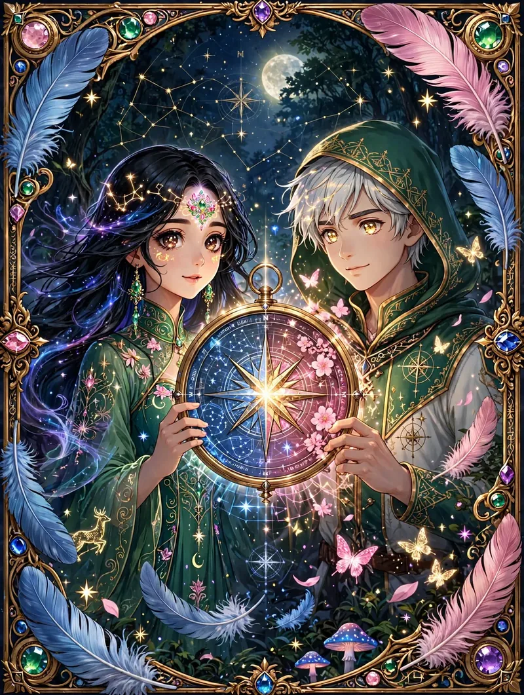
05 / 05
El viaje de Liam y Elara para compartir sus fábulas con otras aldeas refleja la transformación personal, que es un proceso continuo de crecimiento y aprendizaje. En el coaching ontológico, este viaje también es continuo. Reflexiona sobre cómo tus descubrimientos y experiencias pueden contribuir positivamente a tu comunidad y promover un cambio positivo.
Principio de coaching ontológico • Texto íntegro
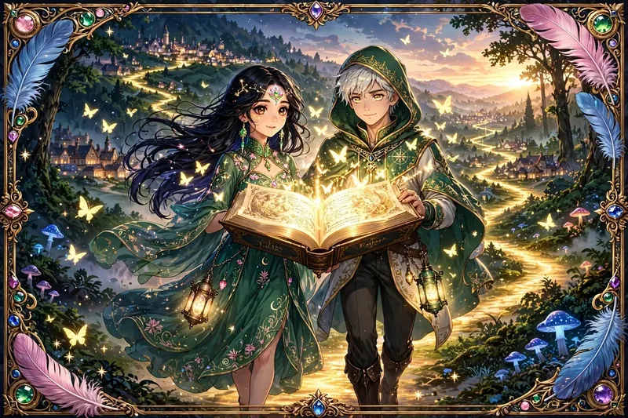
Liam y Elara integran lo aprendido: el libro oscuro de las historias por reinterpretar y el libro dorado de las nuevas narrativas posibles.
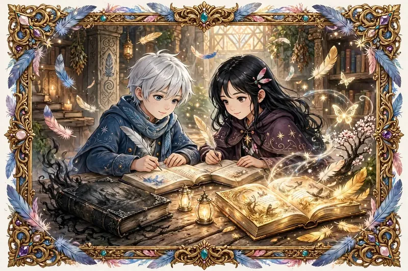
La historia de Liam y Elara no solo ofrece un relato mágico, sino que también proporciona una lección profunda sobre la importancia de la claridad, el lenguaje, la reinterpretación, el equilibrio emocional y la transformación personal. Al aplicar estos principios en nuestras vidas, podemos descubrir nuevas formas de entendernos a nosotros mismos y a nuestro entorno, y vivir vidas más plenas y auténticas.
Ahora que has leído la historia, puedes usar tu lámpara mágica para descubrir fábulas y aprender cómo aplicarlas en tu vida cotidiana. A continuación, te mostraré una serie de ejercicios para ayudarte a empezar. Cada lámina se presenta completa, sin recortes, para acompañar la reflexión.
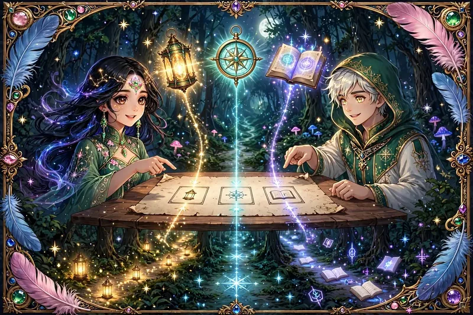
Ejercicio 01 — 01 / 09
Haz un recuento de las áreas de tu vida que estás más preocupados, desconciertos o frustrados. Encuentra una de ellas y elige una historia relacionada con ese tema para leer.
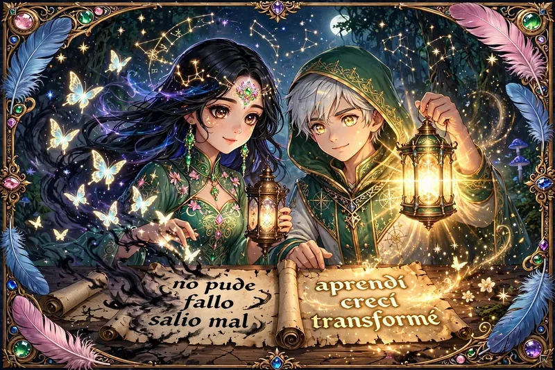
Ejercicio 02 — 02 / 09
En tu vida actual, ¿en qué área te sientes perdido o indeciso? Tómate un momento para escribir sobre esa situación. ¿Qué emociones surgen al pensarlo? ¿Qué preguntas quedan sin responder? Después, escoge una historia (puede ser de tu propia vida o una fábula externa) que hable sobre superación o desafío, y reflexiona sobre cómo la luz de esa historia podría iluminar tu camino.
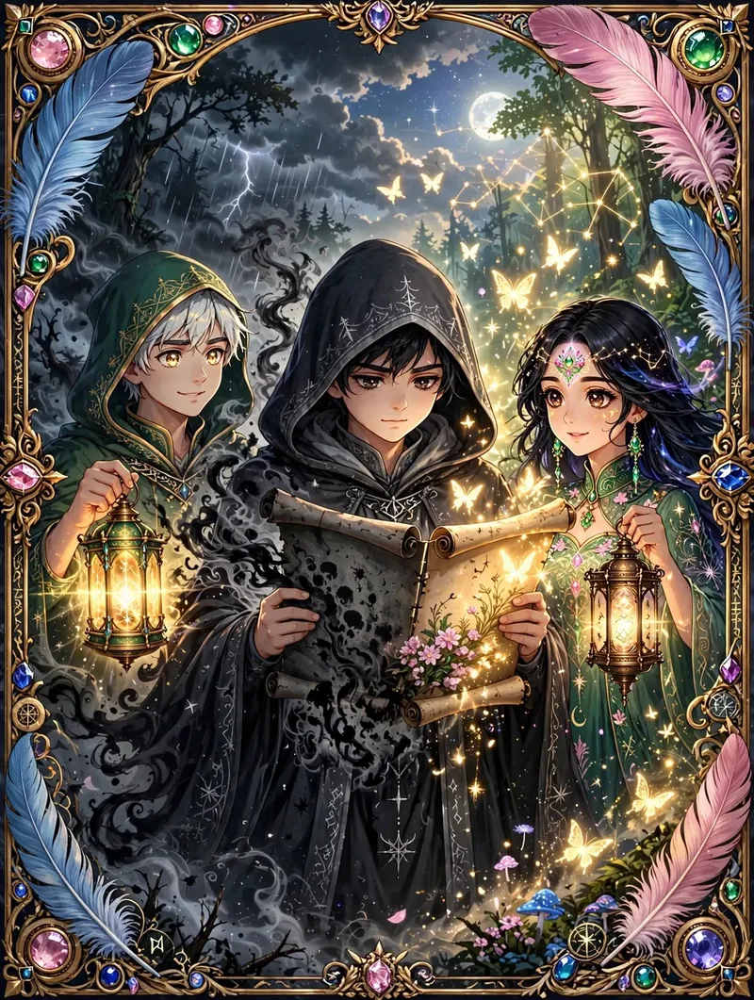
Ejercicio 03 — 03 / 09
Lee la historia varias veces y observa cómo tu perspectiva se modifica con cada lectura. ¿Cómo es que esta historia te ayuda a comprender mejor lo que estás enfrentando?
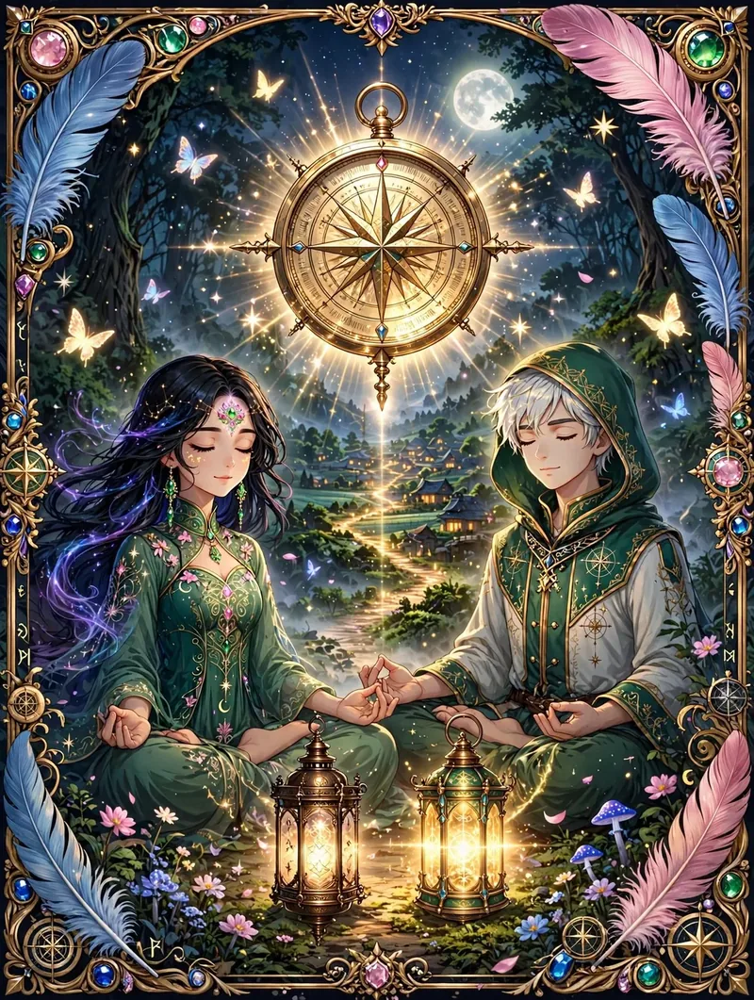
Ejercicio 04 — 04 / 09
Identifica dos o tres lecciones clave que aprendiste mientras leías la historia. Estas serán tu "guía" para empezar a aplicar esta sabiduría en tu vida diaria.
Ejercicio 05 — 05 / 09
Después de leer la historia, reflexiona sobre las tres lecciones más poderosas que has aprendido. Luego, plantea tres acciones concretas que puedes hacer para aplicar esas lecciones en tu vida diaria. Por ejemplo, si una lección es la importancia de la claridad, ¿qué pasos puedes tomar para ser más claro en tus decisiones y relaciones?
Ejercicio 06 — 06 / 09
Encontrarás que algunas historias de tu propia vida están plagadas de palabras como "no pude", "también me salió mal" y "fallé". Empieza a reescribir estas historias para crear narrativas más positivas y potentes.
Ejercicio 07 — 07 / 09
Toma una historia negativa o limitante de tu vida y cámbiala por una narrativa más empoderante. Si sientes que no lograste algo, cambia el enfoque para ver cómo esa experiencia te enseñó algo importante. Puedes escribir ambas versiones: la negativa y la transformada, y luego leerlas en voz alta. ¿Cómo cambia tu sentir? ¿Cómo afecta tu energía?
Ejercicio 08 — 08 / 09
Toma tu lámpara mágica, posiciona el compás en un lugar prominente y emite una breve meditación centrada en la gratitud por las historias que has descubierto. Permítele iluminarte y guiarnos a todos hacia un camino de transformación personal y comunitaria.
Ejercicio 09 — 09 / 09
En el viaje de Liam y Elara, vemos cómo compartir historias puede transformar a las comunidades. ¿Quién en tu vida podría beneficiarse de escuchar una de tus historias? Haz una lista de personas con las que podrías compartir una lección importante que has aprendido. Si te sientes cómodo, comparte un pequeño extracto de tu historia personal, y observa cómo esta acción podría impactar positivamente en ellos.
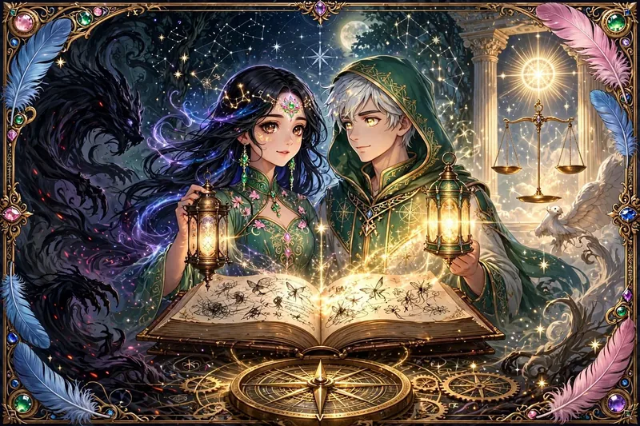
Lectura íntegra — Principios
Liam y Elara son dos jóvenes guardianes que cuidan de lámparas mágicas y un Gran Libro de Fábulas en un pequeño pueblo olvidado. Cuando una tormenta de aves negras llega al pueblo y oscurece el camino, Liam y Elara utilizan sus lámparas, el libro y un compás dorado para enfrentar los desafíos que se les presentan. A lo largo de su viaje, aprenden lecciones importantes sobre la claridad, el lenguaje, la reinterpretación de historias personales, el equilibrio emocional y la transformación personal.
Siguiendo los principios de la psicoanálisis, podemos observar en esta historia temas relacionados con la concepción freudiana del yo, el ello y el id. Liam y Elara representan al ego, que busca mantener un equilibrio saludable entre su razonamiento lógico y sus emociones creativas. Su uso de las lámparas mágicas y el libro para comprender y transformar sus vidas es similar al proceso analítico de Freud de convertir los deseos reprimidos en deseos reales y aceptables.
Además, la historia aborda temas relacionados con la transformación personal y el cambio emocional, que son conceptos importantes en la psicoanálisis. Liam y Elara descubren que el verdadero poder radica en su capacidad de reinterpretar sus historias personales y cambiar su perspectiva, lo cual es similar al proceso de desconstrucción y reconstrucción del yo en la teoría freudiana.
En esta historia presenta elementos que se alinean con los principios del psicoanálisis, particularmente en cuanto a la concepción del ego, el proceso analítico y la importancia del cambio emocional y personal.
Siete prácticas ilustradas. Cada lámina se presenta completa, sin recortes, para acompañar la exploración del inconsciente, los sueños y la historia personal.
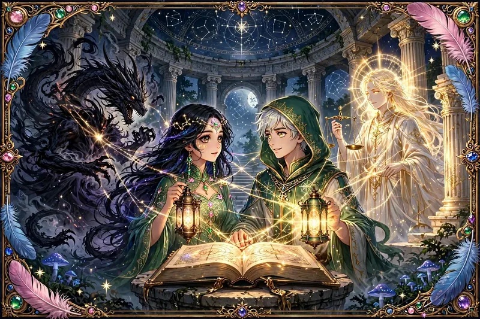
Ejercicio 01 — 01 / 07
Escribe un diálogo imaginario entre tu Yo (tu parte consciente y racional), tu Ello (tus deseos, instintos y emociones reprimidas) y tu Superyó (tu moral y creencias aprendidas). Reflexiona sobre cómo estos tres aspectos interactúan en una situación de tu vida. ¿Cuál de ellos tiene más control sobre tus decisiones?
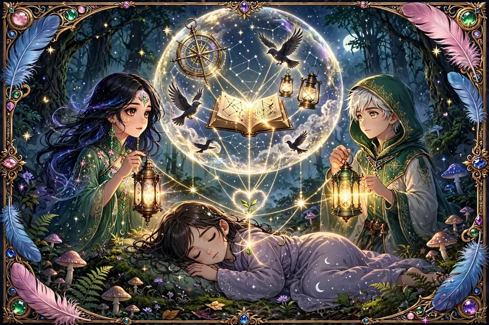
Ejercicio 02 — 02 / 07
Intenta recordar un sueño reciente y escríbelo con el mayor detalle posible. Analiza los símbolos y emociones presentes en el sueño. ¿Cómo podrían estar relacionados con deseos reprimidos o conflictos internos? ¿Qué historia te cuenta tu subconsciente a través de este sueño?
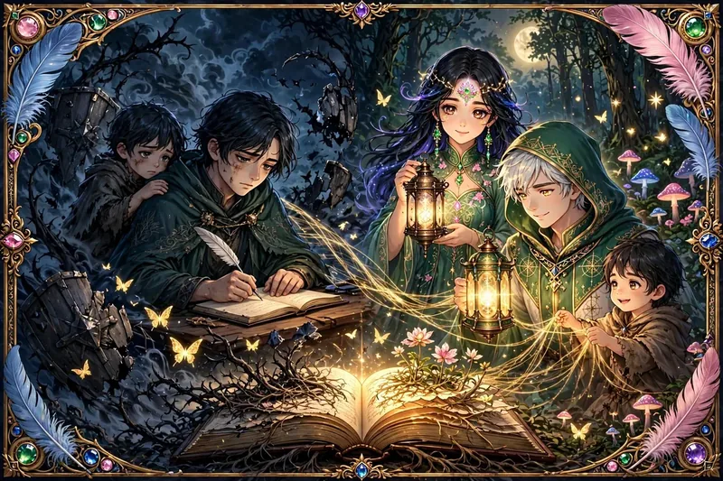
Ejercicio 03 — 03 / 07
Elige un evento de tu pasado que te haya marcado. Escribe la historia tal como la recuerdas, centrándote en tus emociones y pensamientos en ese momento. Luego, reescríbela desde una perspectiva psicoanalítica: ¿Cómo influyeron tus experiencias infantiles, creencias o mecanismos de defensa en tu reacción? Reflexiona sobre cómo puedes reinterpretar esa historia desde un punto de vista más comprensivo o transformador.
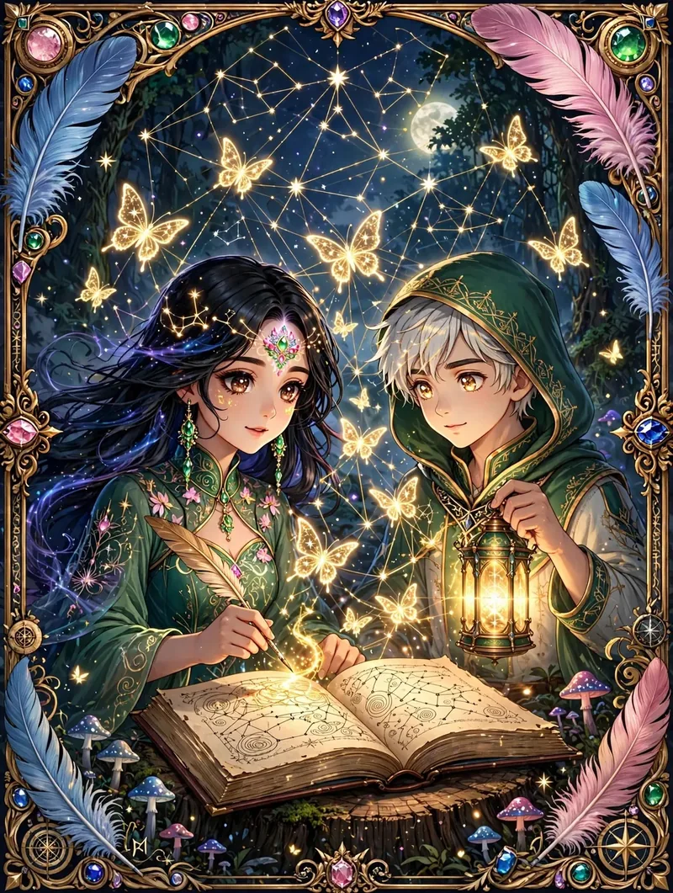
Ejercicio 04 — 04 / 07
Escribe una lista de palabras que te vengan a la mente sin censura ni juicio. Después de completar la lista, revisa las palabras y busca patrones o temas recurrentes. ¿Qué revelan estos temas sobre tus pensamientos inconscientes y emociones ocultas?
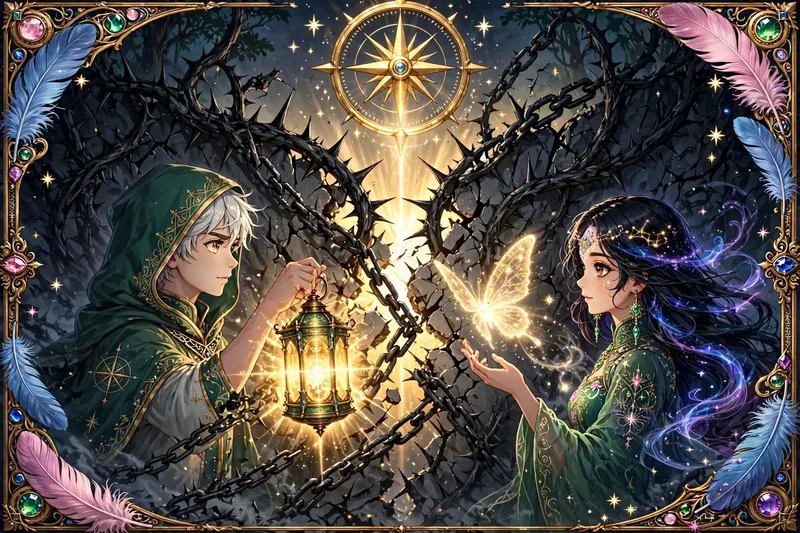
Ejercicio 05 — 05 / 07
Piensa en algo que has evitado hacer o enfrentar en tu vida. Pregunta: ¿Qué miedo subyacente podría estar evitando que tomes acción? Relaciona esto con las defensas psicoanalíticas como la represión, la negación o la racionalización. ¿Estás usando alguna de ellas para evitar confrontar una verdad interna?
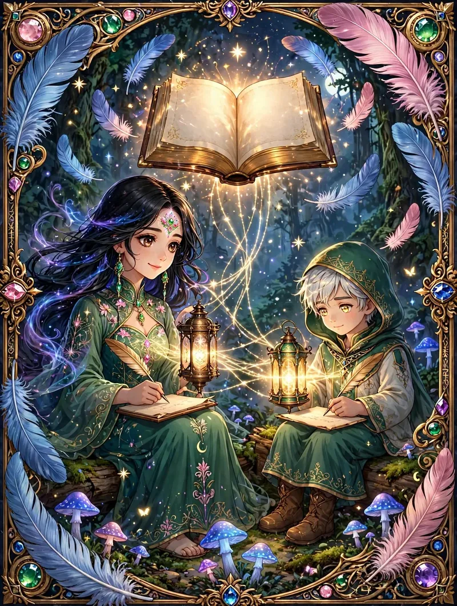
Ejercicio 06 — 06 / 07
Escribe una carta a tu 'niño interior' (la versión más joven de ti mismo). Explica lo que has aprendido y ofrécele apoyo. Luego, escribe una carta desde la perspectiva de tu niño interior hacia tu yo actual. ¿Qué miedos, deseos o inseguridades expresa? Reflexiona sobre cómo las experiencias de tu infancia han moldeado tu presente.
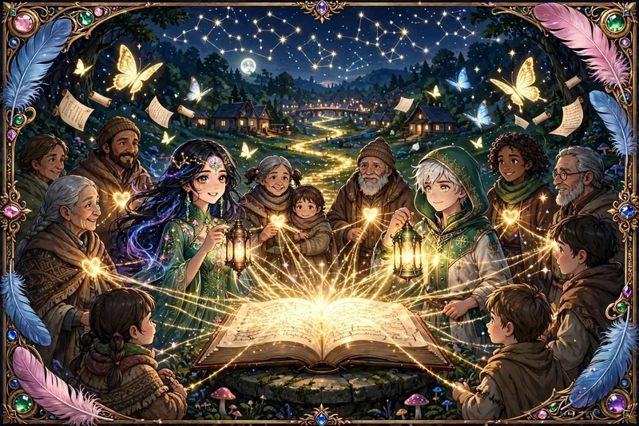
Ejercicio 07 — 07 / 07
En el viaje de Liam y Elara, vemos cómo compartir historias puede transformar a las comunidades. ¿Quién en tu vida podría beneficiarse de escuchar una de tus historias? Haz una lista de personas con las que podrías compartir una lección importante que has aprendido. Si te sientes cómodo, comparte un pequeño extracto de tu historia personal, y observa cómo esta acción podría impactar positivamente en ellos. Alternativamente: Identifica a una persona en tu vida con la que tienes un conflicto recurrente. Pregunta: ¿Estoy proyectando en esta persona algo que en realidad pertenece a mí? Reflexiona sobre cómo esta persona podría estar reflejando aspectos de ti mismo que aún no has aceptado.